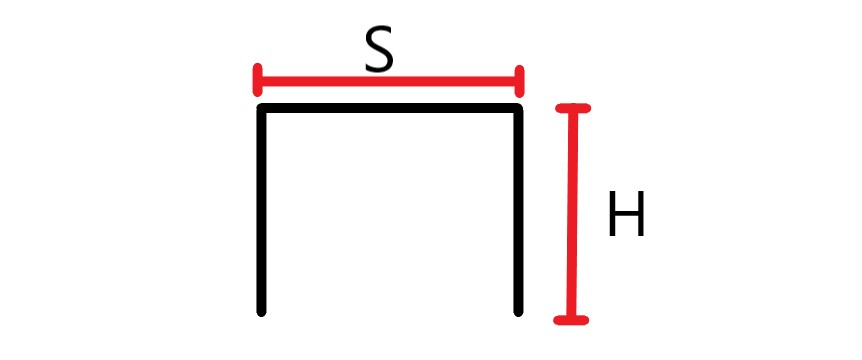
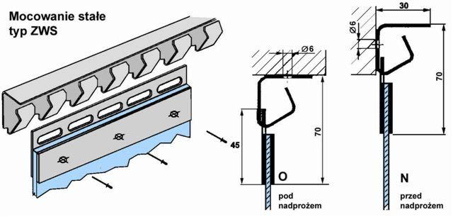

Montaż kurtyny pasowej

Zamawiając u nas kurtynę pasową potrzbne jest wykonanie pomiarów światla otworu (wyskości H i szerokości S) wszytskie pomiary zapisujemy w milimetrach. W zesawie otrzymacie państwo elementy niezbędne do montażu kurtyny z pominięciem kołków montażowych, które dobiera się bezpośrednio do rodzaju powieżchni montażowej.
Montaż krok po kroku

Po odebraniu od nas paczki, otrzymujecie państwo listwy montażowe oraz pasy PCV zakute w blaszki
służące do powieszenia ich na listwach. Przed przystąpieniem do montażu zadbaj o zabezpieczenie miejsca pracy.
Krok 1
Listwy montażowe mocujemy za pomocą kołków montażowych do nadproża. Listwy docinamy z niewielkim zapasem który należy odciąć przy montażu.Krok 2
Wieszamy pasy PCV na listwach montażowych zaczynając od lewej strony, pozostawiając odstęp w zależności od szerokości pasa:- 3 zęby dla 200
- 5 zęby dla 300
- 7 zęby dla 400
Krok 3
W odstępy, które zostawiliśmy wieszamy pozostałe pasy.Krok 4
Pasy które zawiesiliśmy powinny wisieć w odległości 2/3 centymetrów nad posadzką. Przy pomocy podstawki i ostrego noża do tapet skracamy pasy pozostawiając wymagany odstęp.Wykonujemy kurtyny pod indywidualne zamówienie klienta, z uwzględnieniem jego potrzeb, oraz oczekiwań.